k-Day 051｜高原的時間
前天騎車的時候，我感覺到自己在一個極度緩慢的時間裡流動。眼前的坡度緩慢地上下起伏，無盡綿延到遠方的地平線外。那些山坡就跟我在奉國寺看到的七佛的姿態是一樣的。
「草原跟奉國寺一樣」這種想法一直揮之不去，但是仍相當模糊，也許還需要幾天的時間感受沈澱。
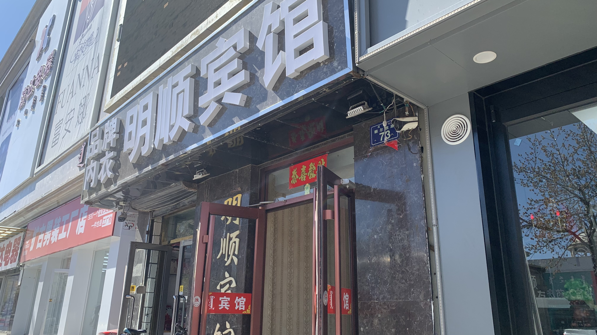
昨天到貝子廟前換了間更便宜的酒店，早上提著行李下樓時，休息室的前台妹妹笑著衝出來說：「你要出發啦？」
「還沒，我還要拿一些行李。」看著他的笑臉感到有點困惑。
再次下樓時，他已經等在櫃檯。還了房卡，順便跟他兩瓶買水。
「這裡有熱水，剛燒好的。要不給你裝滿吧？」突如其來的意外真是受寵若驚。拆下熱水壺，把裡面的涼水倒進寶特瓶後交給他。「另一個瓶子也兑一點熱水不行嗎？」
這種要求我可是第一次聽到，「當然可以！謝謝你！」開心地把寶特瓶也交給他。
「這個給你，這是我們內蒙的名產。」他拿出一塊白色圓形糕點。將糕點插在前貨架網袋內。看著他的笑臉，牙齒像貝殼一樣白的發亮。
「我可以給你拍張照嗎？真的很謝謝你。」他害羞的拿起牆邊的拖把拖著剛剛從熱水壺灑出的熱水說：「不用！不用！拍什麼照！祝你旅途順利！」
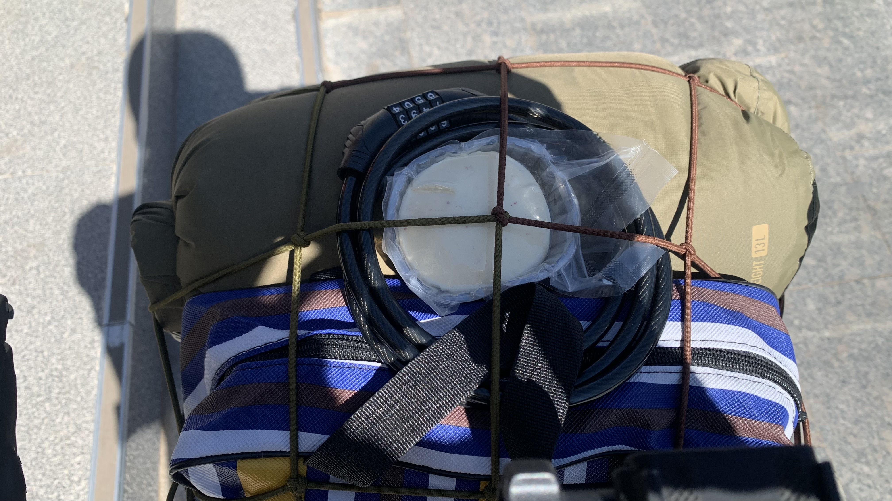
飯店就在貝子廟前，今天天氣大好，跟昨天下午參觀時的荒涼感又有些不同。
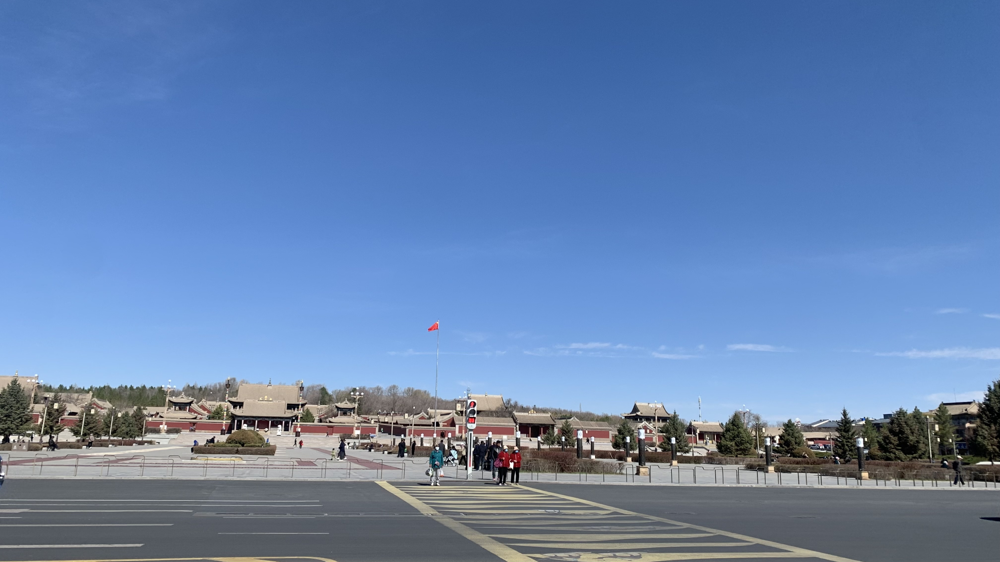
等紅綠燈時心裡想著這麼多的善意，我該如何報答呢？
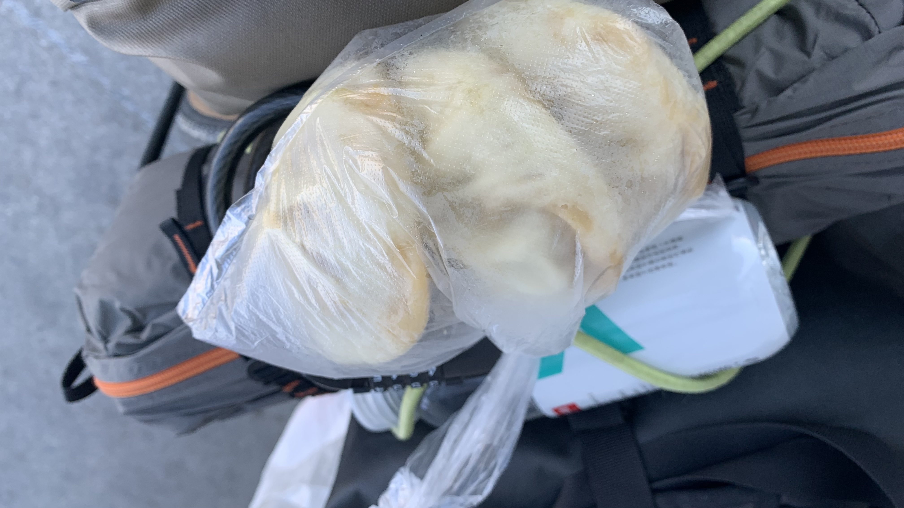
離開市區前買了三顆包子，準備當成早中晚餐。既然水裝滿了，今天不打算仰賴人類。
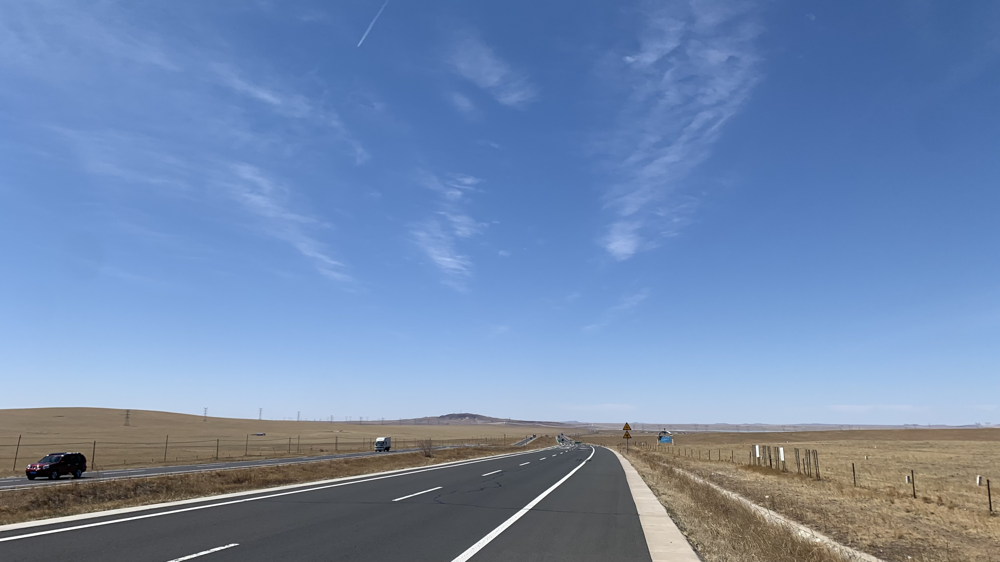
今天的地貌和前天一模一樣：延伸到地平線的公路、還沒長草的緩坡、吃著乾草的馬群，還有藍天和逆風。
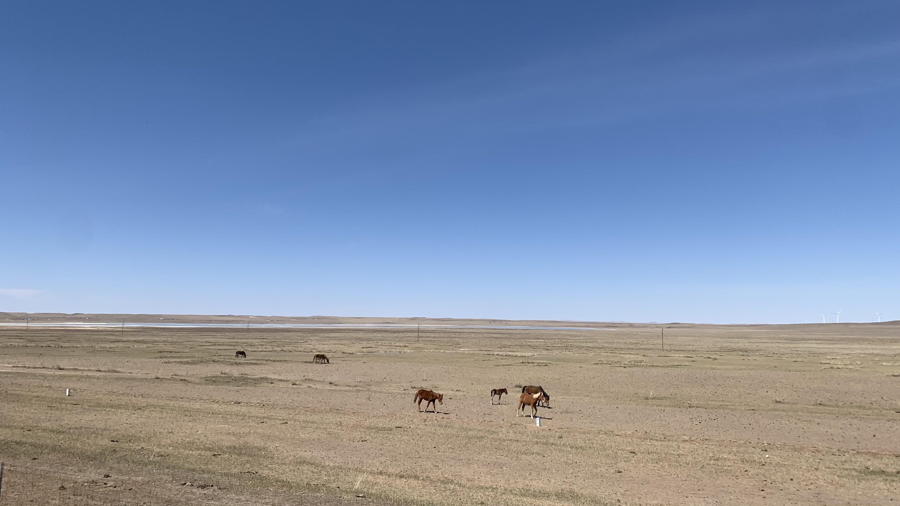
這群馬兒中有一匹小馬，紅棕色的毛髮和白色的短腿十分可愛。當我接近他們時，兩隻大馬擋在我和小馬之間，謹慎的望向我。直到看我動身離去，才帶著小馬往反方向走。
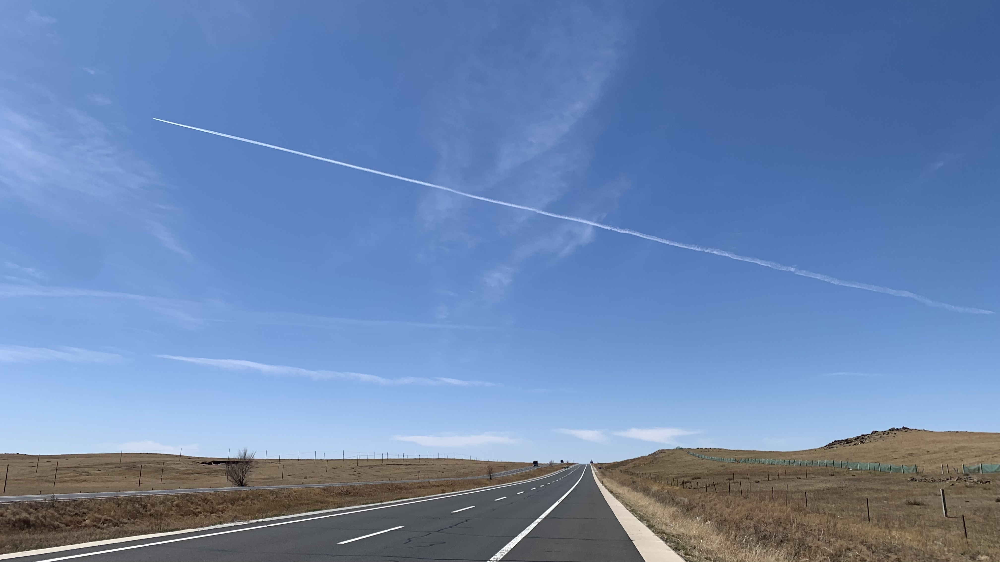
這兩天已經不知道上上下下爬了多少坡。從遠處看來巨大寧靜的高原，卻吹著看不見的烈風。
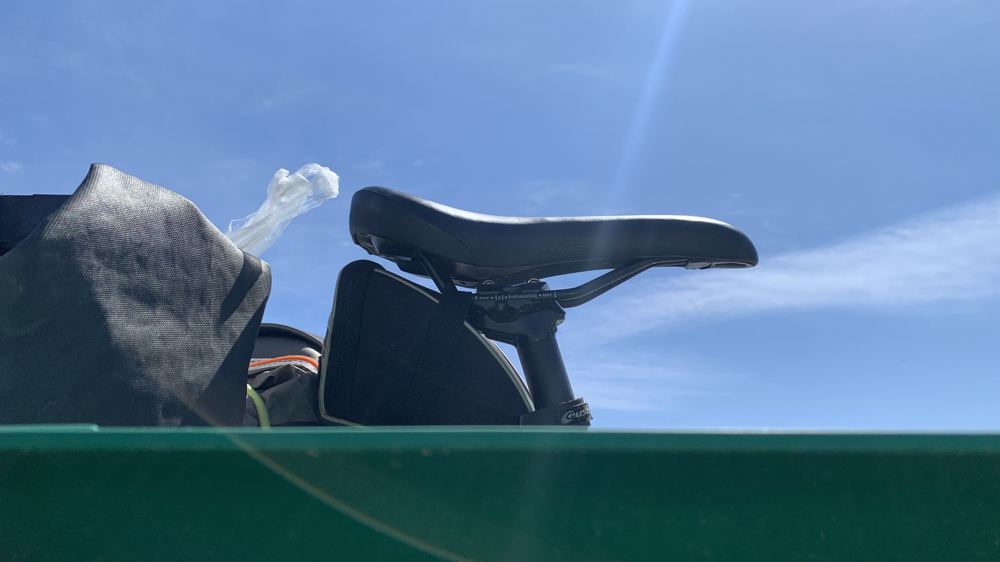
午休時找不到遮陰處，又躲在護欄後面遮陽避風。
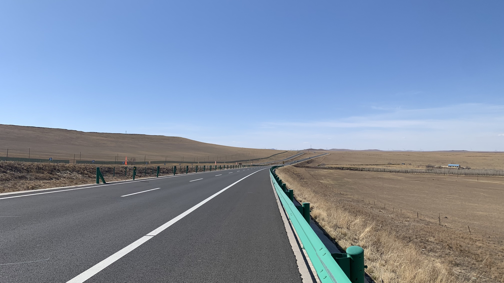
說真的，就算拿前天的照片來放應該也看不出有任何異狀。唯一的差別大概是今天連下坡都必須換到最小齒比用力踩踏，膝蓋相當疼痛。
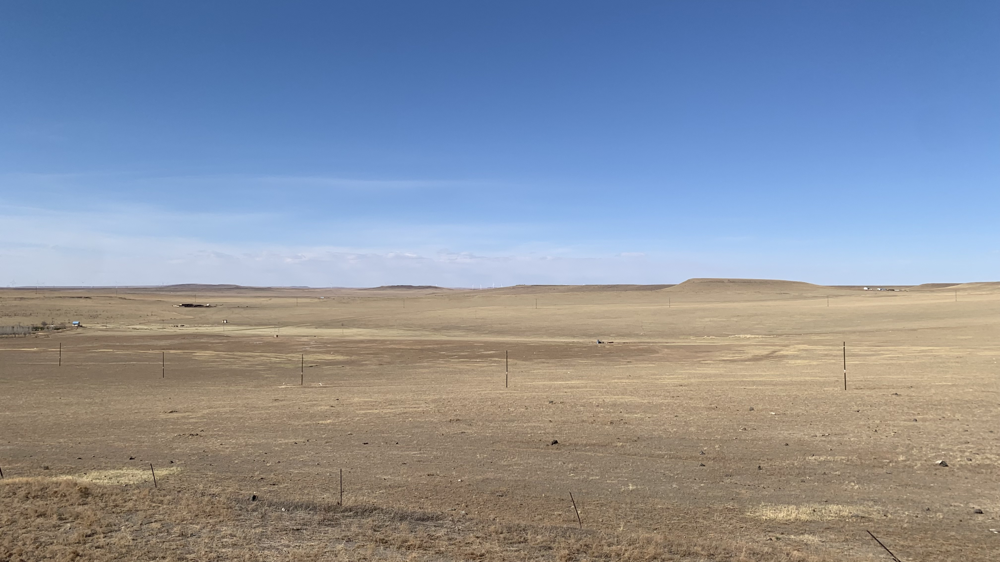
遠處的高地看來巨大又寧靜，若不是身在其中，絕對感受不到此時空氣裡的動態張力。
休息後再啟程時，右膝開始陣陣抽痛，踩幾下就必須停下來休息，然而坡和風沒有停下來的意思。
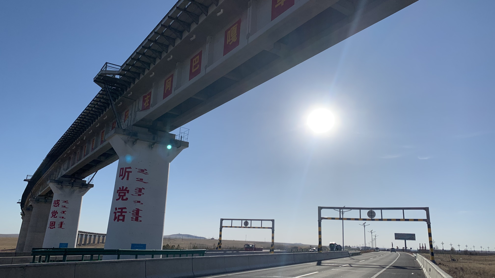
到了下午三點左右，幾乎是仰賴左腳推進的狀態。草坡上的馬兒不知何時已統一成黑色，一匹一匹散落在遙遠的山頭，遠看很有氣勢。有幾隻站在近處的高地上，黑色的毛皮在枯黃的草地上反射低斜的烈日光線，閃閃發亮，相當神氣。看他們的身型肚子圓潤飽滿，腿屬於細長型，屁股和胸前的肌肉沒有歐洲馬那麼浮誇，說是懷孕的話也不可能那麼多隻都是如此。看來是馬場特地餵養的。
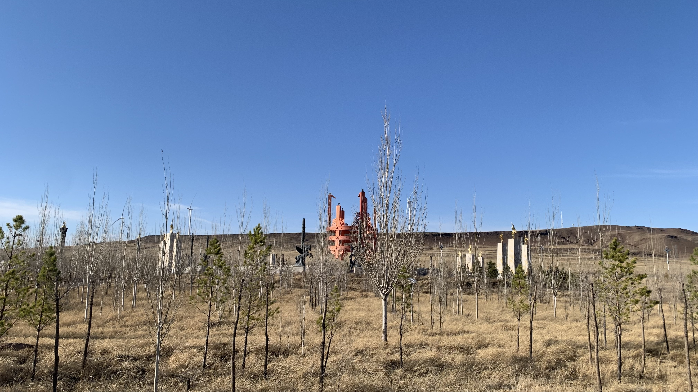
進城前看到黑馬雕塑，原來剛剛草原上油油亮亮的黑馬們就是成吉思汗軍隊的特種戰馬。可惜頂著風騎，膝蓋又陣陣刺痛，沒有幫這些帥氣黑馬拍照。
抵達住處發現內側有個腫包，頗尷尬，該不會積水了吧。坐在馬桶上沖冷水，貼上藥布，吃一顆消炎藥。
打開Windy看了明天的風向，又要刮風了。距離二連浩特還有260公里。
高原的時間像是無盡的草坡和風，身在其中時狂亂地地像根蓬草，抽離出來看，卻又緩慢地像是靜止了一樣。
今日花費： 包子 7.5、住宿 70元